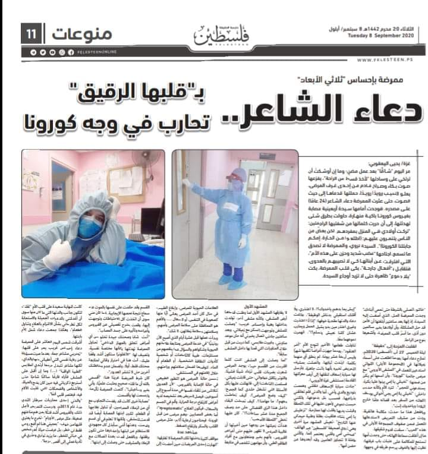

A pioneering technical and vocational education to enable our graduates to be more competitive in the local and global labor market and It's goals :-
-
Achieving a balance in the local community between general academic education and technical and vocational education.
-
Graduating scientifically and technically qualified cadres with the latest educational and training methods.
-
Keeping abreast of developments in the local and regional market needs of technical and professional specialties
-
nurturing and developing talents for distinguished students who have special talents and abilities
Technical program
Trade program
Blacksmithing
Through which the student works in Blacksmithing profession with an approved certificate
E-extensions
Through which the student works in E-extensions profession with an approved certificate
furniture design
Through which the student works in furniture design profession with an approved certificate
